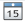

Izmjena manifestacije
Sva polja koja su označena sa * su obavezna.
Softver Vam neće dozvoliti potvrdu unosa dok ne unesete sva obavezna polja.
Oznaka manifestacije
Oznaka manifestacije mora da ima između 8 i 20 karaktera,
sadrži samo brojeve i cifre i
jedinstvena je.
Oznaka manifestacije predstavlja jedinstvenu vrijednost za svaku manifestaciju. Ukoliko ne dodate ikonicu, a potvrdite unos, automatski će se dodijeliti ikonica odabranog tipa manifestacije.
U dijalogu Vam je dat jedan primjer ispravne oznake manifestacije u okviru polja za unos npr. LABEL1337.
Svi neispravni unosi prikazani su kao na slici 1, a prelaskom kursora miša preko ikonice
 u tooltip-u će Vam
se prikazati informacije o formatu ispravnog unosa.
u tooltip-u će Vam
se prikazati informacije o formatu ispravnog unosa. 
Naziv manifestacije
Naziv manifestacije je obavezan i
sadrži najviše 30 karaktera.
Naziv manifestacije pruža korisniku jasnu predstavu o kojoj se manifestaciji radi. Format poruke koji se prikazuje korisniku kod neispravnog unosa je isti kao i kod oznake manifestacije. (Slika 1)
Opis manifestacije
Opis manifestacije je obavezan i
sadrži najviše 160 karaktera.
U ovom polju potrebno je napisati detaljan opis manifestacije. Ograničen je na 160 karaktera, a greška se prikazuje
u formatu kao na slici 1.
Tip manifestacije
Tip manifestacije je obavezan i
može se odabrati unošenjem oznake tipa manifestacije ili putem dijaloga za odabir.
Odabir se vrši tako što u polje za oznaku tipa manifestacije možemo direktno unijeti oznaku željenog tipa manifestacija.
Ako je tokom unosa pronađen tip manifestacije sa unesenom oznakom, pojavljuju se ikonica i naziv tipa manifestacije u poljima kao na slici 3.
Drugi način je odabirom iz dijaloga tipova manifestacija.
Datum održavanja manifestacije
Ne možete postaviti datum održavanja manifestacije stariji od današnjeg datuma.
Izbor datuma održavanja manifestacije vršite tako što Vam se klikom na ikonicu 
u desnoj strani polja za unos datuma prikazuje kalendar na kom birate željeni datum.
Kada se dijalog otvori, podrazumijevani datum je današnji datum.
Broj očekivanih gostiju
Broj očekivanih gostiju mora biti nenegativan cio broj..
Ovo polje predstavlja predviđanje koliko će ljudi posjetiti datu manifestaciju. Dozvoljen opseg brojeva je između 0 i
2147483647. Format poruke korisniku ukoliko napravi grešku je isti kao i na slici 1.
Ikonica manifestacije
Ikonicu manifestacije birate sa Vašeg računara. Preporuka je da bude iste visine i širine. Moguće je dodati samo
datoteke koje su odgovarajućeg tipa (npr: .jpg, .jpeg, .png ili .gif).
Da biste odabrali ikonicu manifestacije potrebno je da uradite sljedeće:
-
Kliknete na dugme Odaberite ikonicu označenog na slici 5.
Slika 5. Dugme za odabir ikonice manifestacije - Odaberete željenu ikonicu unutar dijaloga za odabir fajlova i potvrdite unos.
-
Kada ste uspješno dodali ikonicu, u tekstualnom polju će Vam se pojaviti putanja do odabrane ikonice. (Slika 6)
Slika 6. Putanja do ikonice u tekstualnom polju ako je dodavanje uspješno.
NAPOMENA: Ukoliko ne odaberete ikonicu manifestacije, biće joj automatski dodijeljena ikonica tipa manifestacije.
Status alkohola
-
Nema alkohola
Manifestacija ne dozvoljava konzumiranje alkohola. -
Može se donijeti
Moguće je donijeti sopstveni alkohol na manifestaciju. -
Može se kupiti
Postoje prodajna mjesta alkohola na mjestima gdje se manifestacija održava.
Izbor bilo koje od navedene tri opcije se bira pritiskom na dugme sa lijeve strane teksta.
Ukoliko se kraj teksta nalazi dugme , to znači da je odabrana ta opcija.
NAPOMENA: Predefinisani status alkohola postavljen je na vrijednost - Nema alkohola.
Kategorija cijena
-
Besplatno
Ulaz na manifestaciju se ne plaća. -
Niske cijene
Ulaz na manifestaciju je jako jeftin. Plaća se simboličan iznos ulaza. -
Srednje cijene
Iznos potreban izdvojiti za manifestaciju je dostupan većoj populaciji ljudi. -
Visoke cijene
Ulaz na manifestaciju je skup. Samo manji dio populacije može sebi priuštiti odlazak na ovu manifestaciju.
Izbor bilo koje od navedene četiri opcije se bira pritiskom na dugme sa lijeve strane teksta.
Ukoliko se kraj teksta nalazi dugme , to znači da je odabrana ta opcija.
NAPOMENA: Predefinisana kategorija cijena postavljena je na vrijednost - Besplatno.
Dodatne informacije
-
Dostupno za hendikepirane
Ukoliko je polje lijevo to znači da manifestacija nema obezbijeđenu podršku koja omogućava lak pristup hendikepiranim licima, a ukoliko je polje manifestacija omogućava pristup hendikepiranim licima. -
Dozvoljeno pušenje
Ako je polje sa lijeve strane neoznačeno (), pušenje nije dozvoljeno, a u suprotnom () pušenje je dozvoljeno. -
Manifestacija se održava napolju
Polje označava da je manifestacija održava u zatvorenom prostoru, dok polje predstavlja da je mjesto održavanja manifestacije napolju.
NAPOMENA: Inicijalno je postavljeno da manifestacija nema podršku ni za jednu od navedenih informacija.